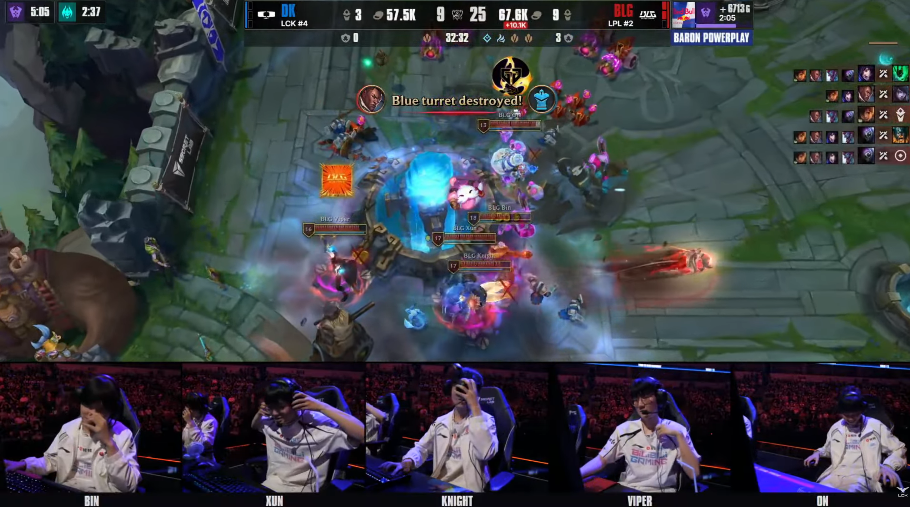

하루종일 끌려다니다 그냥 대떡당함.

하루종일 끌려다니다 그냥 대떡당함.
나이트 폼이 심상치않다
젠지 티원 해줘!!!!
중국은 이제 티원이 한번은 미끄러질때가 되었다 하고 4강 제발 올라오라던데
왜 결과를 여기서 스포당해야되냐 시발아?
3세트는 디스거스팅 그 자체엿다
애들 얼굴보니 긴장한게 보이더라
쇼메 졸라 응원했는데 아쉽누
1,2 세트 아쉽게 지길래 3세트부터 역전 나오나 했는데 3세트를 올해 모든경기중에 제일 못해버림.
정글바텀 긴장해서 플레이 굳은게 보이더라 3세트는 역대급 무뇌호러쇼
저 멤버로 ewc 우승에 월드 8강이면 할만큼 한거지
경험치 먹었으니 재정비하고 다음시즌 준비하면 잘할듯
중국 영토의 무결성을 지지하는 젠지가
딥기의 복수를 해주길...